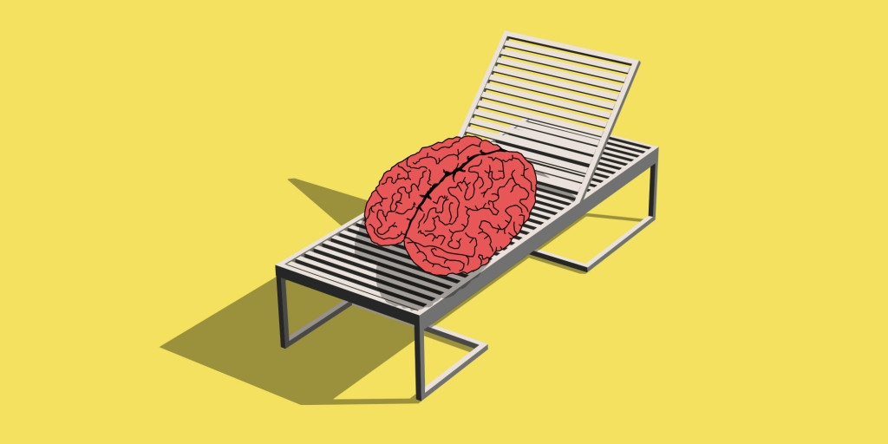
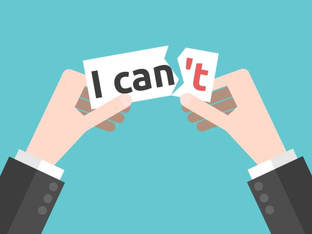

HOME | ABOUT US | CONTACT | MAIN MENU
There are many ways we try to reduce stress. We as high school students regularly deal with stress so here are some ways to help reduce or relieve stress:
source:https://ac-illust.com/en/clip-art/764728/take-a-deep-breath
-
Take a deep breath - Sometimes when we take a hard test or have a project due soon, sometimes we panic and have too much things on our mind. It's helpful to take a few deep breaths to calm down and reorganize your thoughts.
source: https://www.pngtube.com/
viewm/biiihR_friends-talking-friend-talking-clipart-png/
-
Talk to a friend - Talking to a friend reduces stress because they can reassure or motivate you so you don't feel too stressed.

source: https://creativevibes.org/taking
-break-is-a-life-hack/
-
Take a break - Taking a break from your task not only releives stress but also lets you get your mind off the task you have. It allows you to relax and lets you think so that when you return to your task you come back with fresh ideas.
source: https://www.netclipart.com/
isee/bmxxxT_asana-events-find-us-in-person-planning-/
-
Plan Ahead - Managing your time is one of the ways to prevent stress since you wouldn't get into a scenario where you don't have enough time for a task. Another way is to familiarize yourself with the task if, for example it is a test, its best to do some practice excercises so that you know what to do.
source: https://www.clipartwiki.com/
iclip/TiTmwR_15-friendly-clipart-sociable-person-for-free-download/
-
Have Fun - Doing certain activities like playing games or doing your hobbies help you relax and reduces stress.

source: https://www.seattletimes.com
/explore/careers/you-have-to-stop-canceling-and-rescheduling-things-really/
-
Think Positively - Whenever you face a hard task its unavoidable to get stressed. When we look at problems in a more optimistic way however, I find that it is much easier to look for solutions or ways to do the problem.